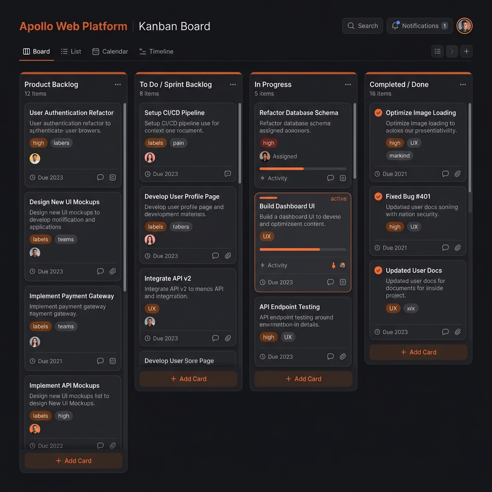
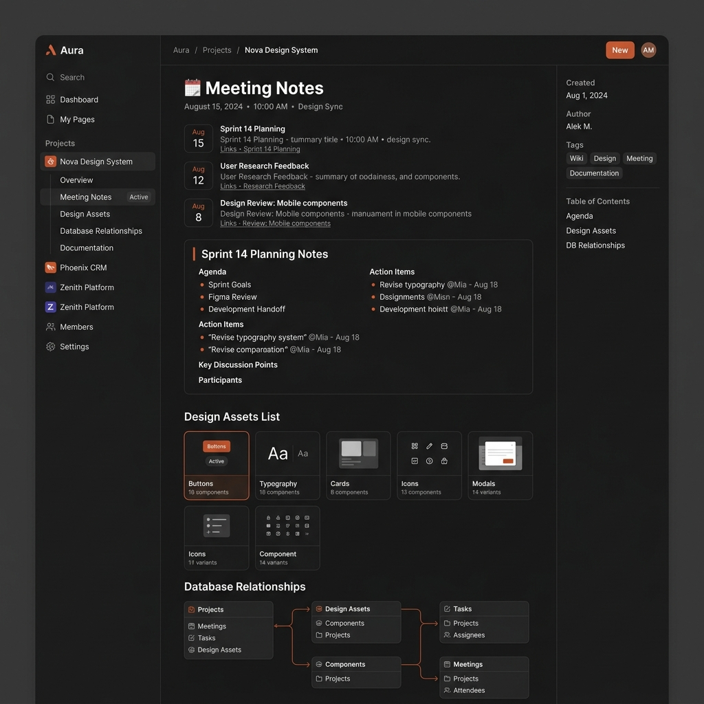

Papel que Executei no Projeto
No Projeto Integrador (PI) da CESAR School, atuei de forma ativa na intersecção entre o desenvolvimento técnico do software e a articulação de requisitos. Minha atuação dividiu-se em duas frentes fundamentais:
Desenvolvimento Técnico: Atuação direta na construção de interfaces (Frontend com React e React Native) e lógica de integração com APIs (Backend Node.js), além do consumo e estruturação de queries e lógica de dados relacionais.
Porta-Voz Técnico (Liderança): Responsável por traduzir as decisões complexas de arquitetura, banco de dados e fluxos de código em apresentações claras e dinâmicas para os clientes industriais parceiros (como Rede Globo e Sistema Jornal do Comércio).
Entregas e Colaboração
O desenvolvimento do projeto ocorreu sob o framework de metodologias ágeis (Scrum/Kanban), com iterações curtas e reuniões periódicas para alinhamento técnico e de design.
Nossas principais entregas englobaram o mapeamento de requisitos, protótipos navegáveis de alta fidelidade desenvolvidos junto à equipe de design, diagramação lógica do banco de dados e a implementação funcional do código integrado.
Gestão Visual do Fluxo
Para coordenar o trabalho da equipe multidisciplinar (designers, analistas de negócios e desenvolvedores), utilizamos um fluxo transparente e centralizado:
- Trello (Gestão Operacional): Utilizado como quadro Kanban dinâmico para acompanhamento das atividades da sprint (A Fazer, Em Desenvolvimento, Homologação e Concluído), facilitando a visualização de gargalos e dependências.
- Notion (Repositório de Conhecimento): Centralizador da documentação do projeto, contendo atas de reuniões com clientes, regras de negócios documentadas, scripts SQL de referência e o diário de bordo técnico da equipe.


Dificuldades Enfrentadas e Organização
Desafios Encontrados
- Transição Rápida de Contexto: Conciliar a rotina de estágio corporativo na FAV (consultas PL/SQL e SoulMV), as aulas e avaliações na CESAR School, e a Iniciação Científica (AppCardio).
- Gerenciamento de Escopo: Filtrar as demandas dinâmicas e alterações de requisitos feitas pelo cliente durante o semestre, mantendo o foco nas entregas viáveis de MVP.
- Dependências Técnicas: Resolver conflitos de integração entre o repositório frontend e as APIs que demandavam configuração específica de ambientes locais da equipe.
Estratégias de Organização
- Uso de Planner Pessoal: Implementação de agenda e planner diário de compromissos para alocação dedicada de blocos de estudo, estágio e desenvolvimento do projeto, reduzindo o estresse de prazos.
- Notion de Conhecimento Centralizado: Criação de páginas dedicadas no Notion para consolidar anotações rápidas das disciplinas e registros técnicos, evitando perda de dados e acelerando a retomada do foco.
- Sprints e Daily Status: Adoção de um alinhamento rápido e assíncrono interno na equipe para atualizar tarefas e prever impedimentos técnicos antes das reuniões semanais oficiais com o cliente.
Reflexões sobre Soft Skills
Comunicação Assertiva
O papel de porta-voz técnico forçou a superação de uma postura mais introvertida nas apresentações de sprints. Aprendi a focar nas dores do cliente, expondo conquistas técnicas com vocabulário simples e claro para stakeholders não técnicos.
Colaboração Multidisciplinar
Interagir de perto com designers e estudantes do eixo de negócios permitiu enxergar o produto de software além do código. Aprendi a negociar a viabilidade técnica do layout sem ferir a experiência de usuário proposta.
Escuta Ativa e Empatia
Nas reuniões de fechamento de sprint, exercitei a escuta ativa para acolher feedbacks do cliente. Compreender suas reais prioridades operacionais ajudou a equipe a priorizar o backlog técnico com foco em gerar o maior impacto possível no produto.
Adaptabilidade
A transição entre o pensamento clínico da minha primeira formação (Nutrição na UFPE) e o raciocínio lógico-analítico do desenvolvimento de sistemas provou ser um diferencial de adaptabilidade, enriquecendo minha habilidade de analisar problemas complexos sob múltiplos prismas.